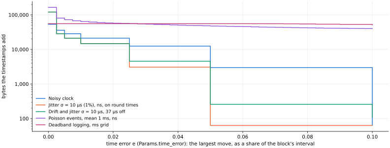

← codec comparison (index.html) · SPEC §3: time axis
fluxcode can store each sample's timestamp exactly next to its values (by default; the
last section lets them move by a share of an interval). This page covers only that time
axis: what the timestamps add to a one-minute block group (60 blocks of 1,000 samples, nominally 1 kHz, int64 ns ticks).
Every number here is the block group with times minus the same block group without them. For scale, that block group's values alone take
17,976 bytes (a 4.12 Hz sine at the default settings), 304 µs to encode and
110 µs to decode.
Regenerate: cd experimental && uv run python make_time_report.py.
A perfect grid, and a perfect grid with a few gaps, are by far the most common timestamps in practice. A noisy clock (host timestamps on arrival) is the third common shape, and the only one of the three where the timestamps cost more than the values (here about two and a half times as much).

| shape | what it is | bytes (example) | bits/sample | irregular blocks | vs values | bytes over 64 groups: median | max | encode time added | decode time added |
|---|---|---|---|---|---|---|---|---|---|
| Perfect grid | Every interval exactly 1 ms: hardware-clocked acquisition, resampled or synthesized series. | 66 | 0.009 | 0/60 | 0.4% | 66 | 133 | +13 µs (+4%) | +13 µs (+11%) |
| Grid with a few gaps | A perfect grid that sometimes skips: dropped packets, reconnects, a paused logger (Poisson, mean 2 gaps per minute, each 5 ms to 3 s). | 167 | 0.022 | 2/60 | 0.9% | 166 | 834 | +20 µs (+7%) | +17 µs (+16%) |
| Noisy clock | Host timestamps on arrival: 1 ms nominal, σ = 20 µs jitter, µs resolution. | 53,413 | 7.122 | 60/60 | 297.1% | 53,411 | 53,560 | +333 µs (+110%) | +115 µs (+104%) |
The example is the median-size block group of 64 seeds per shape. Times are single thread, best of 30, Apple M3 on AC power; each added time's percentage is of the same block group's values-only encode (304 µs) or decode (110 µs). vs values is the timestamps' bytes as a share of the values' 17,976.
Params(time_error=0.1) the same clock
costs 65 bytes (last section).A grid with k gaps per minute, each 5 ms to 3 s; median of 16 block groups per row.
| gaps per minute | irregular blocks | bytes | bits/sample | bytes per gap |
|---|---|---|---|---|
| 0 | 0/60 | 63 | 0.008 | — |
| 1 | 1/60 | 125 | 0.017 | 62 |
| 2 | 2/60 | 164 | 0.022 | 51 |
| 5 | 5/60 | 747 | 0.100 | 137 |
| 10 | 9/60 | 914 | 0.122 | 85 |
| 20 | 17/60 | 1,140 | 0.152 | 54 |
| 60 | 38/60 | 1,374 | 0.183 | 22 |
For comparison, shapes with many more irregular blocks (from bench/time_axis.py). Only the
cases with random intervals cost more than the values. Percentages are of the values-only encode and decode, as
above.
| timestamps | bytes | bits/sample | irregular blocks | encode time added | decode time added |
|---|---|---|---|---|---|
| 1 kHz, 20 gaps | 1,094 | 0.146 | 19/60 | +95 µs (+31%) | +52 µs (+47%) |
| 1 kHz, 1% dropped | 1,461 | 0.195 | 60/60 | +258 µs (+85%) | +112 µs (+102%) |
| drifting clock (0.99998 ms) | 339 | 0.045 | 60/60 | +215 µs (+71%) | +86 µs (+79%) |
| jitter σ=10 µs, ns resolution | 120,712 | 16.095 | 60/60 | +414 µs (+136%) | +160 µs (+146%) |
| jitter σ=10 µs, µs resolution | 45,903 | 6.120 | 60/60 | +331 µs (+109%) | +113 µs (+103%) |
| Poisson events, mean 1 ms, µs | 87,889 | 11.719 | 60/60 | +329 µs (+108%) | +166 µs (+151%) |
| Poisson events, mean 1 ms, ns | 164,661 | 21.955 | 60/60 | +375 µs (+123%) | +192 µs (+175%) |
| deadband logging, ms grid | 55,498 | 7.400 | 60/60 | +530 µs (+175%) | +225 µs (+205%) |
| bursts 10 kHz / idle | 102 | 0.014 | 60/60 | +121 µs (+40%) | +93 µs (+85%) |
1% dropped and a drifting clock stay cheap: their intervals take two or three values. Jitter, Poisson events and deadband logging have random intervals, and ns resolution costs more than µs when the jitter really is at ns resolution.
When the jitter is measurement noise, Params(time_error=e) lets each timestamp move by up to
e times its block's interval (0 to 0.5; the default 0 keeps them exact). The values are kept as measured,
and the format doesn't change: the decoder sees ordinary times.
update and update_time_blocks
round new samples onto the stored blocks' grids and never move stored times.
| timestamps | exact | e = 0.02 | e = 0.05 | e = 0.1 |
|---|---|---|---|---|
| Perfect grid | 66 B · 0/60 +12 µs (+4%) | 66 B · 0/60 +35 µs (+11%) · max 0.000 | 66 B · 0/60 +35 µs (+11%) · max 0.000 | 66 B · 0/60 +34 µs (+11%) · max 0.000 |
| Grid with a few gaps | 167 B · 2/60 +20 µs (+7%) | 167 B · 2/60 +84 µs (+28%) · max 0.000 | 167 B · 2/60 +82 µs (+27%) · max 0.000 | 167 B · 2/60 +81 µs (+27%) · max 0.000 |
| Noisy clock | 53,413 B · 60/60 +340 µs (+112%) | 21,168 B · 60/60 +364 µs (+120%) · max 0.010 | 2,990 B · 60/60 +367 µs (+121%) · max 0.050 | 65 B · 0/60 +73 µs (+24%) · max 0.092 |
| Jitter σ = 10 µs (1%), ns, on round times | 120,712 B · 60/60 +412 µs (+136%) | 14,726 B · 60/60 +348 µs (+114%) · max 0.010 | 63 B · 0/60 +73 µs (+24%) · max 0.046 | 63 B · 0/60 +73 µs (+24%) · max 0.046 |
| The same, free-running: 50 µs off the epoch's grid | 120,653 B · 60/60 +415 µs (+137%) | 14,667 B · 60/60 +339 µs (+111%) · max 0.010 | 66 B · 0/60 +72 µs (+24%) · max 0.044 | 66 B · 0/60 +72 µs (+24%) · max 0.054 |
| Drifting clock (0.99998 ms) | 339 B · 60/60 +217 µs (+71%) | 88 B · 0/60 +71 µs (+23%) · max 0.007 | 101 B · 0/60 +69 µs (+23%) · max 0.015 | 86 B · 0/60 +69 µs (+23%) · max 0.021 |
| Drift and jitter σ = 10 µs, 37 µs off | 120,648 B · 60/60 +415 µs (+136%) | 14,661 B · 60/60 +340 µs (+112%) · max 0.010 | 258 B · 2/60 +83 µs (+27%) · max 0.049 | 108 B · 0/60 +74 µs (+24%) · max 0.057 |
| Poisson events, mean 1 ms, ns | 164,661 B · 60/60 +376 µs (+124%) | 57,152 B · 60/60 +367 µs (+121%) · max 0.036 | 47,567 B · 60/60 +345 µs (+114%) · max 0.072 | 39,778 B · 60/60 +323 µs (+106%) · max 0.145 |
| Deadband logging, ms grid | 55,498 B · 60/60 +531 µs (+175%) | 55,498 B · 60/60 +590 µs (+194%) · max 0.000 | 55,498 B · 60/60 +588 µs (+193%) · max 0.000 | 51,270 B · 60/60 +552 µs (+181%) · max 0.100 |
Each cell: bytes the timestamps add · irregular blocks of 60, then the encode time they add (percentage of the values-only encode, 304 µs) and the largest move in median intervals. Single thread, best of 30, Apple M3 on AC power. The chart samples e every 0.0025.
Measurements behind the choices (1-2-5 steps over powers of two, no interpolation of values, no resampling, per-block phases): docs/TUNING.md, Time error.